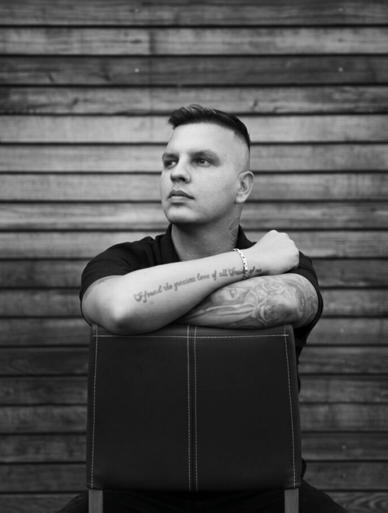

Takhle to vypadá, když JeyBy vyjde na pódium. Chcete to i na své akci?
Chci tuhle energii na akci
Propojuje současný popový zvuk s osobními příběhy a autentickými emocemi. Výrazná vizuální identita, móda a lifestyle z něj dělají interpreta, na kterého se chodí dívat – nejen poslouchat.
Od krátkého vstupu na firemním večírku po celý večer s tanečníky a moderací.
Vytvořme něco, co bude vidět i slyšet.
Koncert, firemní večírek, festival, ples nebo křest. Pošlete nám termín a místo – ozveme se s dostupností a nabídkou na míru.